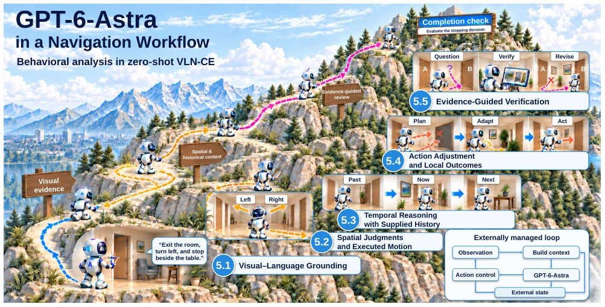
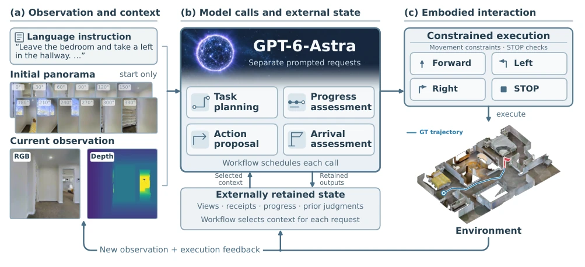
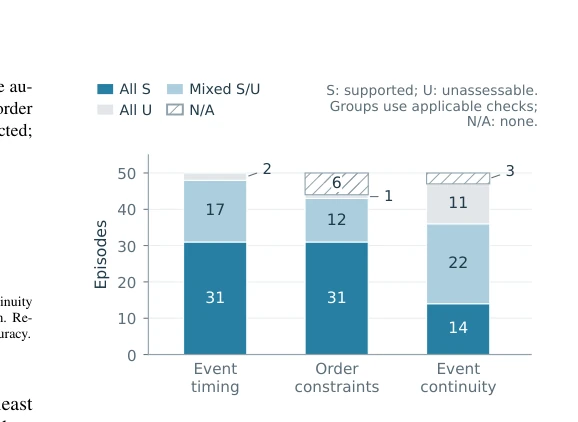
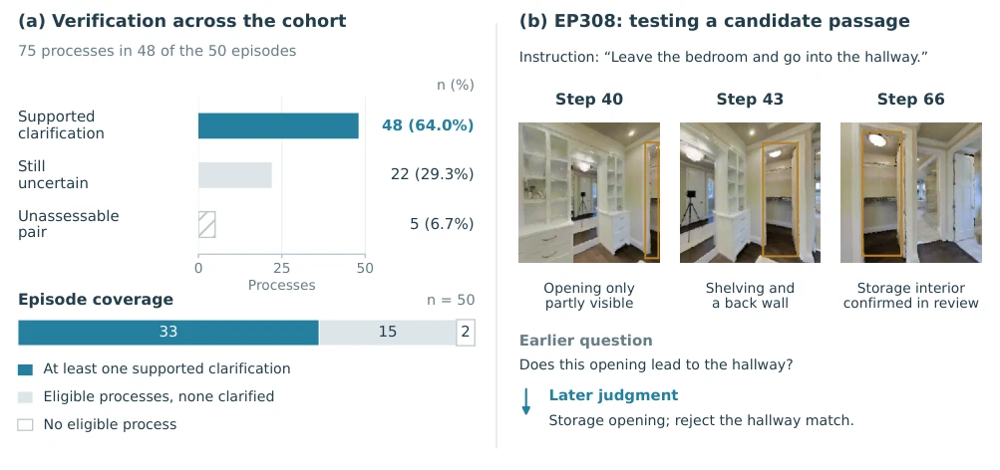
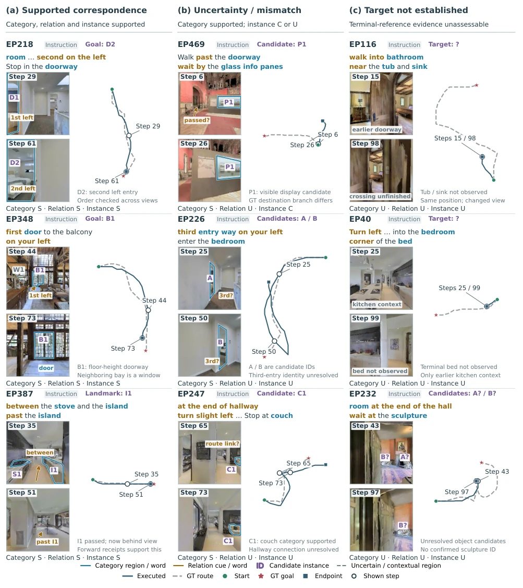
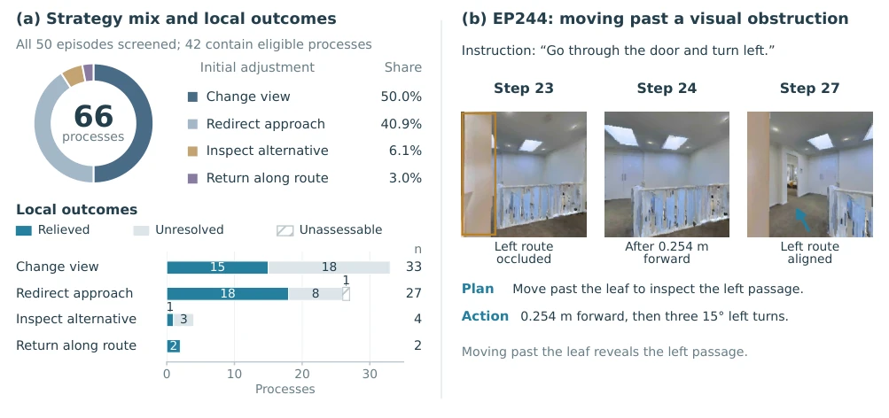

This paper pours cold water on GPT-6-Astra's VLN capabilities, yet remains objective. Although claimed as zero-shot, SR 52% looks acceptable, but upon closer inspection, 36% of episodes are counted as successful only when the system decides to stop itself; the rest either hit walls or overshoot. Most ironically, the model clearly understands 'turn left' and 'second door', but often gets stuck on 'whether to stop' or 'is the path open'. It is like a smart tour guide who knows where what is, but whose legs do not obey, or who is too lazy to walk to the end. This research does not boast about how strong the model is, but instead reveals the gap between 'understanding' and 'execution'. Especially when the model correctly identifies task understanding but cannot convert it to autonomous completion, this 'discrepancy between knowledge and action' is particularly fatal in continuous environment navigation, indicating that having a language model alone is insufficient; one must also see if it can translate judgment into physical movement.
Existing VLN systems often conflate language model decisions and visual observations. Although NavBench distinguishes navigation understanding and execution [18], it lacks tracking of how specific model judgments convert to actions. Many zero-shot methods [4, 19-21, 38] rely on external mechanisms but do not investigate in detail whether the model can actually turn 'recognizing landmarks' into 'walking to the endpoint' in continuous environments (VLN-CE). Especially recognizing an entrance does not equal crossing it, approaching a target does not equal correct stopping. This paper aims to clarify whether GPT-6-Astra can truly utilize observations and history to complete navigation under external workflow assistance, or if it is merely talk. Continuous environments require executing turns and translations, which impose higher requirements on the model's spatiotemporal reasoning, while existing work often ignores decision quality under such physical constraints, leading to inflated evaluation results.

Figure 1. From interpreting instructions to completing navigation. Within the evaluated workflow, GPT-6-Astra can match landmarks and earlier actions to instructions, seek additional evidence, and revise uncertain judgments. These judgments do not always lead to progress or appropriate stopping. The five perspectives (Sections 5.1–5.5) organize this behavioral analysis; the mountain is a conceptual illustration.
The system adopts an externally managed 'observe-decide-execute' loop, with GPT-6-Astra playing four roles via API calls: task planning, progress evaluation, action proposal, and arrival evaluation. There is no packaged agent harness, nor fine-tuning for navigation. External code is responsible for selecting context, retaining history, scheduling requests, and imposing action constraints (such as depth limits, STOP checks). Each request contains specific system prompts and constructed multimodal user messages. The model can request saved images or propose new views, but execution is constrained by the workflow. This design decouples the model itself from external control, enabling clearer evaluation of the model's judgment capability under specific evidence rather than overall system performance. By distinguishing model proposals and executed actions, the authors can track the causal chain from judgment to trajectory, avoiding attributing system errors to the model itself, thus more precisely locating whether it is the model not understanding or the system not executing.

Figure 2. Model calls within an externally managed navigation loop. (a) Observations supply scene evidence. (b) External state retains history and prior judgments; the workflow selects context and constructs separate calls for the four model roles. Outputs update retained records. (c) Action constraints and STOP checks precede execution, whose feedback updates the next request.
Tested on 50 R2R-CE val-unseen clips from Open-Nav, using the R2R VLNCE v1-3 release version. Metrics include SR (52.0%), SPL (48.9%), nDTW (70.8%). Compared to other zero-shot methods [15, 20, 21], SPL is close to AgenticNav-GPT-5.5, but SR is slightly lower. The core finding is the 'completion gap': 36% of episodes have workflow-accepted STOP, and another 16% reached the distance standard within the step limit but did not stop. The model has advantages in visual-language localization and evidence verification, but has limitations in converting judgment to continuous progress and correct stopping. For example, the model can distinguish completed turns from those to be crossed, but the system might continue rotating without crossing. This proves that correct judgment does not equal effective task completion; the evaluation system needs to check if actions follow judgment, otherwise metrics are castles in the air even if high.

Figure 6. Temporal judgments with supplied history. All 50 episodes are grouped by applicable checks: all supported (All S), mixed supported/unassessable (Mixed S/U), all unassessable (All U), or none (N/A). Counts measure evidence coverage under ex- ternal context management, not unaided memory.

Figure 8. Evidence-guided verification in scheduled reviews. (a) Outcomes of 75 processes and mutually exclusive coverage groups across all 50 episodes. Supported clarification includes justified candidate rejection. (b) EP308 resolves one opening as storage rather than the instructed hallway. Ochre outlines track the same candidate; judgment summaries paraphrase saved model reviews. Step t denotes the observation after t actions.
其他图片Other Figures

Figure 4. Visual–language grounding in navigation. Panels show supported correspondence (a), uncertain or inconsistent reference (b), and targets not established (c). Blue, ochre, and purple link category words/regions, relational cues, and candidate IDs, respectively. Step t denotes the observation after t actions. S/C/U follow Table 5.

Figure 7. Action adjustments and local outcomes. (a) The ring shows initial-strategy shares among 66 audited system processes; bars show local outcomes, with totals n at the right. Hatching denotes unassessable outcomes. (b) EP244’s executed viewpoint change reveals a passage hidden during stationary inspection. Gold outlines the door leaf; blue indicates the revealed passage. Plan text paraphrases the model proposal. Step t is the observation after t actions.